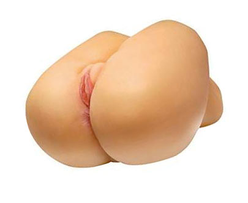

Ja, auch die großen Jungs wollen Spielen. Aus diesem Grund gibt es für die Männer Spielzeug in Form einer Taschenmuschi. Hat er erst einmal die richtige Gummimuschi gefunden, wird er Masturbationserlebnisse haben, die er so schnell nicht vergisst.
Die Taschenmuschi ist das Sextoy für den Mann zur Selbstbefriedigung
Die Taschenmuschi ist ein Masturbator für Männer um sich zu befriedigen. Mit der Gummimuschi, die für lustvolle Momente sorgt, hat jeder Mann ein effektives Lovetoy welches aussieht wie eine Vagina. Wer lieber eine Lustmuschi in Form eines Mundes möchte, soll auch auf dieses Toy nicht verzichten müssen. Der schlauchförmige Kanal des Lusttoys umfasst seinen Penis so fest, dass er nicht lange braucht, um zum Höhepunkt zu kommen. Für ein Selbstbefriedungserlebnis, welches nicht jedes Mal das gleiche ist, wurden die Gummimuschis mit unterschiedlichen Strukturen versehen.
Die Funtion einer nassen Taschenmuschi
Eine Lustmuschi zu benutzen ist nicht wirklich schwer. Damit der straffe Penis leichter in die Gummimuschi gleiten kann, sollte die Öffnung mit einem Gleitgel benetzt sein. Wenn das Spielzeug einsatzbereit ist, kann es auch schon los gehen mit dem Vergnügen. Dabei wird der steife Penis in die feuchte Lustmuschi geschoben. Wer es etwas härte mag, kann die Lustmuschi so hart auf und ab bewegen, bis letztendlich der Höhepunkt eintritt.

Je nachdem, wie die innere Struktur gearbeitet ist, wird auch das Lustempfinden des Mannes sein. Hier kann jeder Mann selbst entscheiden, ob er sich für die glatte oder lieber eine Struktur mit Rillen entscheidet. Für ein lustvolles Spiel mit den Gummimuschis gibt es diese aber auch mit Stiften oder Noppen. Die Stifte oder Noppen, die sich in dem Sextoy befinden, sorgen dafür, dass der Mann ein deutlich intensiveres Masturbationserlebnis hat.
Die richtige Verwendung der Taschenmuschi
Um eine rundum lustvolle Selbstbefriedung erleben zu können, sollte die Taschenmuschi immer mit einem Gleitgel benetzt sein. Das gummiartige Material wird nun einmal nicht von „selbst“ feucht, wie es bei einer echten Muschi der Fall ist. Smit kann sich in der Gummimuschi keine Feuchtigkeit bilden. Dabei sollte dennoch beachtet werden, dass nicht alle Gleitgels, die es gibt, für eine Taschenmuschi geeignet ist.
Nachdem der harte Penis eingedrungen ist, kann der Mann seine Fantasien nutzen und die Gummimuschi für eine Penetration beispielsweise auf einen Tisch legen. Sollte die Taschenmuschi lieber in einer liegenden Position benutzt werden, kann diese mit der Hand am erigierten Glied so lange auf und ab bewegt werden, bis letztendlich der Samenerguss erfolgt. Für ein intensiveres schönes Gefühl kann der harte Penis komplett aus der feuchten Gummimuschi gezogen und anschließend wieder tief eingedrungen werden.
Die Taschenmuschi lässt sich natürlich auch super nutzen, wenn dabei ein Pornofilm geguckt wird. Während der Benutzung der Gummimuschi wird jeder Mann feststellen, dass sich diese der echten Vagina gegenüber nicht wirklich unterscheidet.